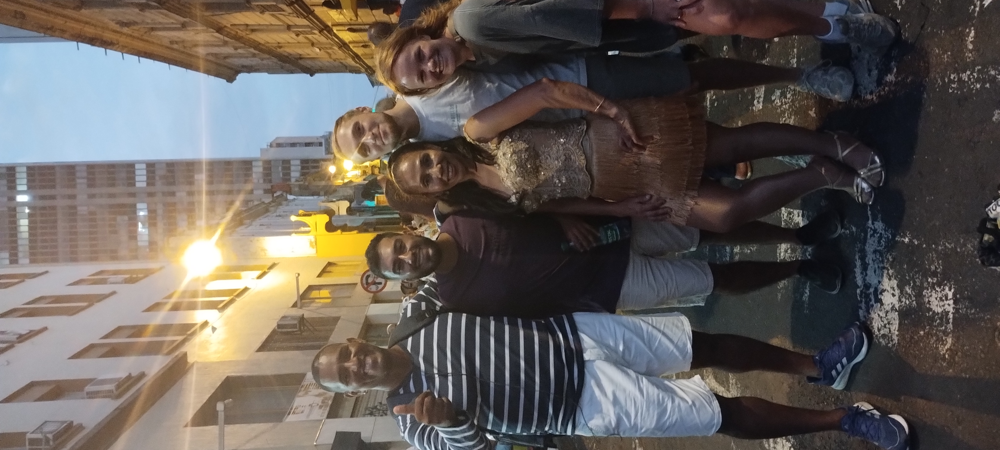
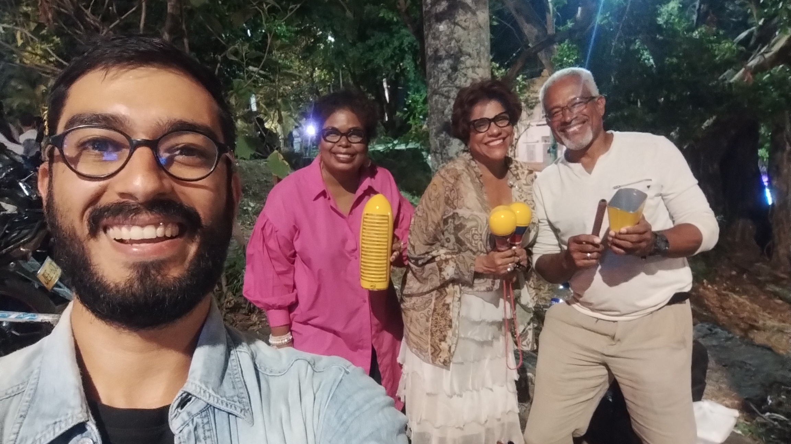
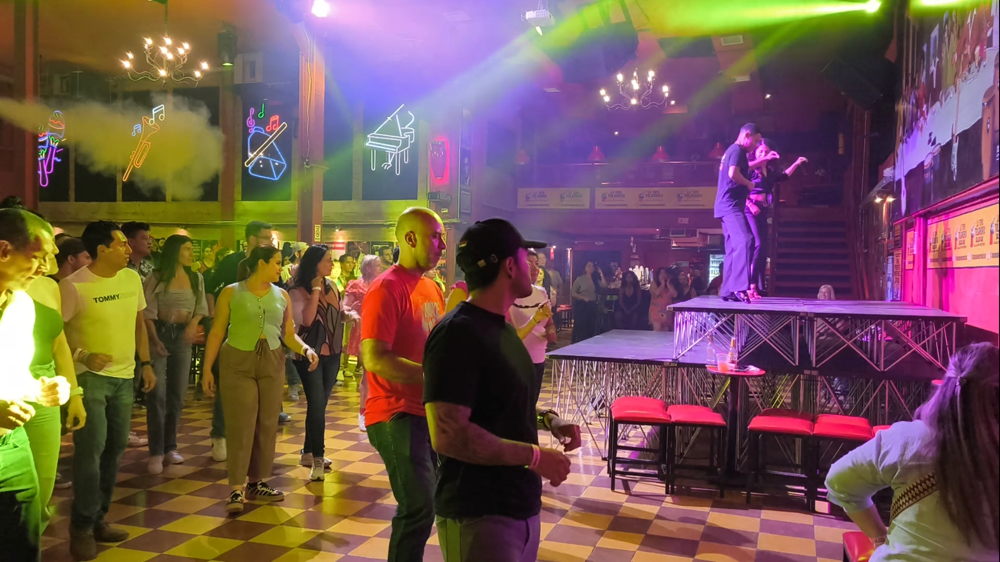
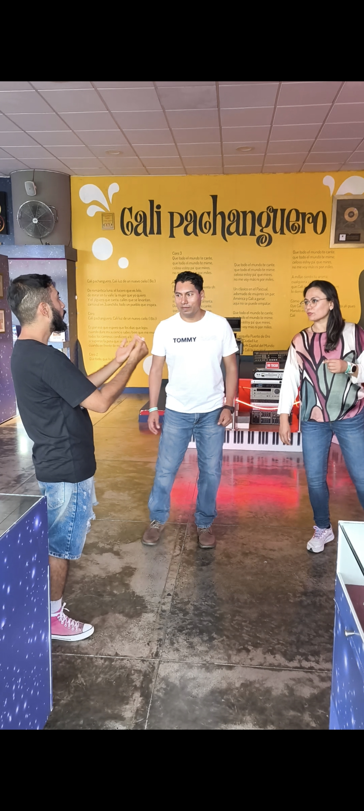

Cali Salsa Experience
Discover why Cali is the World Capital of Salsa. A night of rhythm, history, and dancing in the city's most iconic venues.
Book NowAbout this experience
This isn't just a tour; it's an immersion into the heartbeat of Cali. We'll trace the roots of salsa from the legendary Grupo Niche to the local record shops where vinyl is still king. Step into the World Capital of Salsa and experience a journey through rhythm, history, and the soul of the city. Finally, you'll put your knowledge to the test with a session at one of the city's most iconic dance spots.
The Journey
Jairo Varela Plaza
Meet at the iconic "Salsa Trumpets" monument to begin our exploration of the city's musical heart and learn about the legendary Grupo Niche.
Salsa Museum
A guided visit to either the Jairo Varela Museum or the Barrio Obrero Salsa Museum, meeting the local legends who keep the history alive.
Vinyl Culture
Visit a classic record shop to discover rare LPs and hear the sounds that defined an era of Colombian salsa music.
Dance Floor
A group salsa class at Topa Tolondra (or similar iconic venue), perfect for all levels to learn the unique Caleño style.
What's Included
You Might Also Like